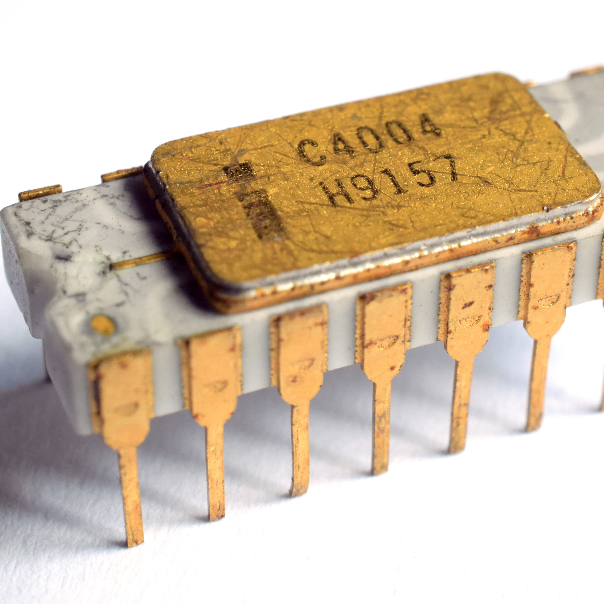
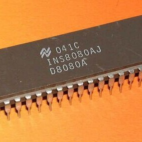
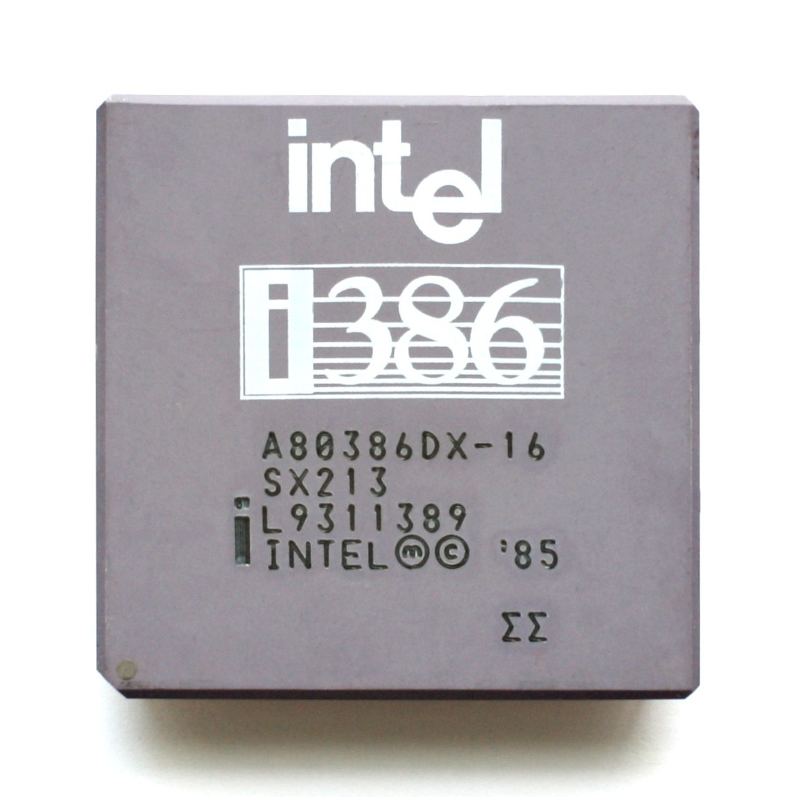
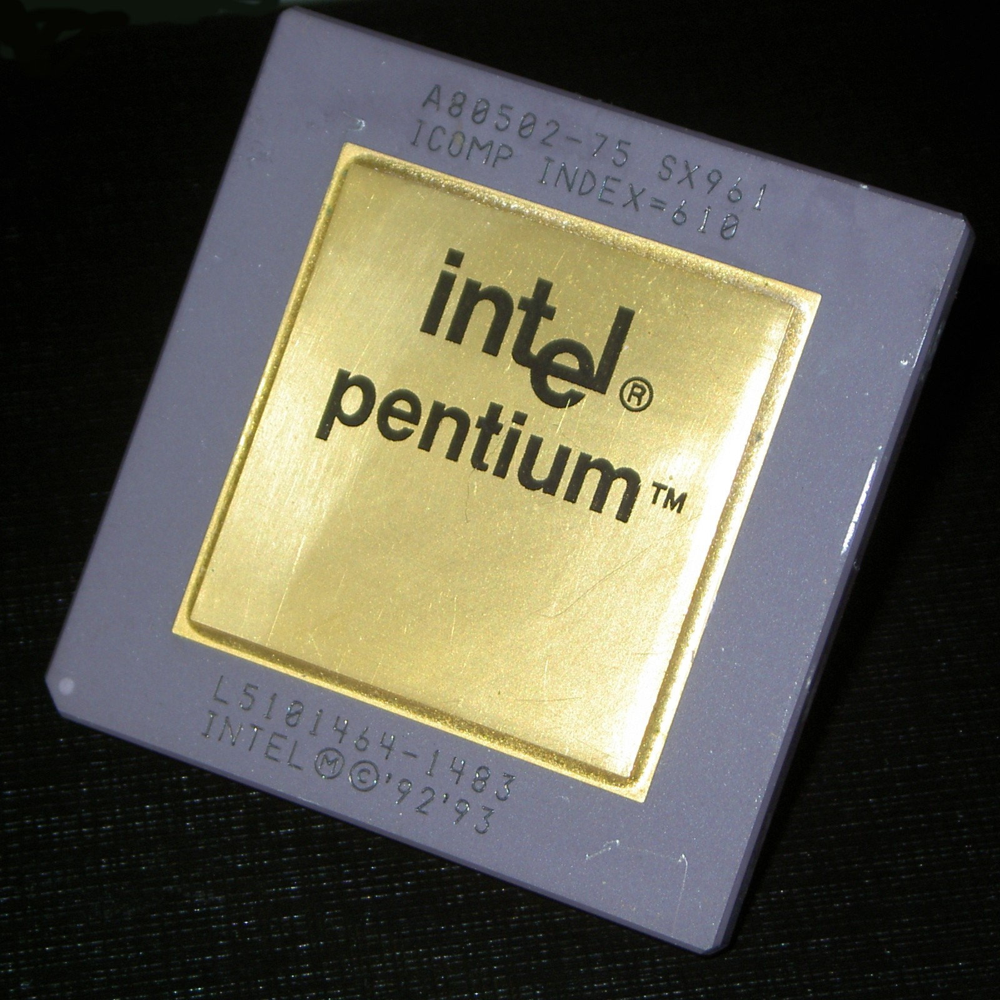
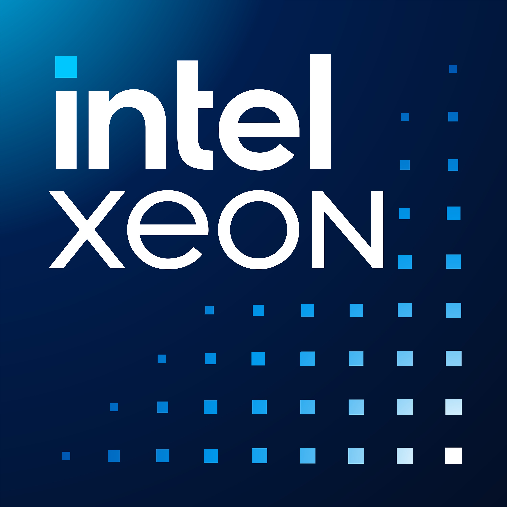
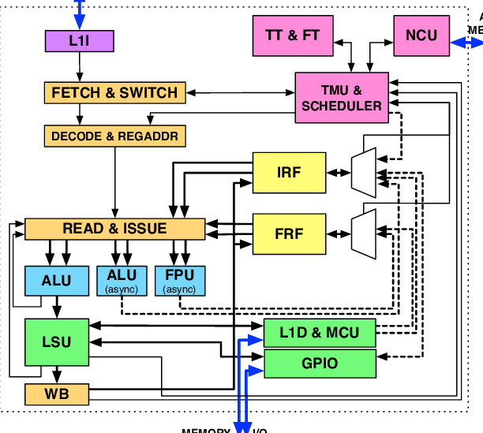
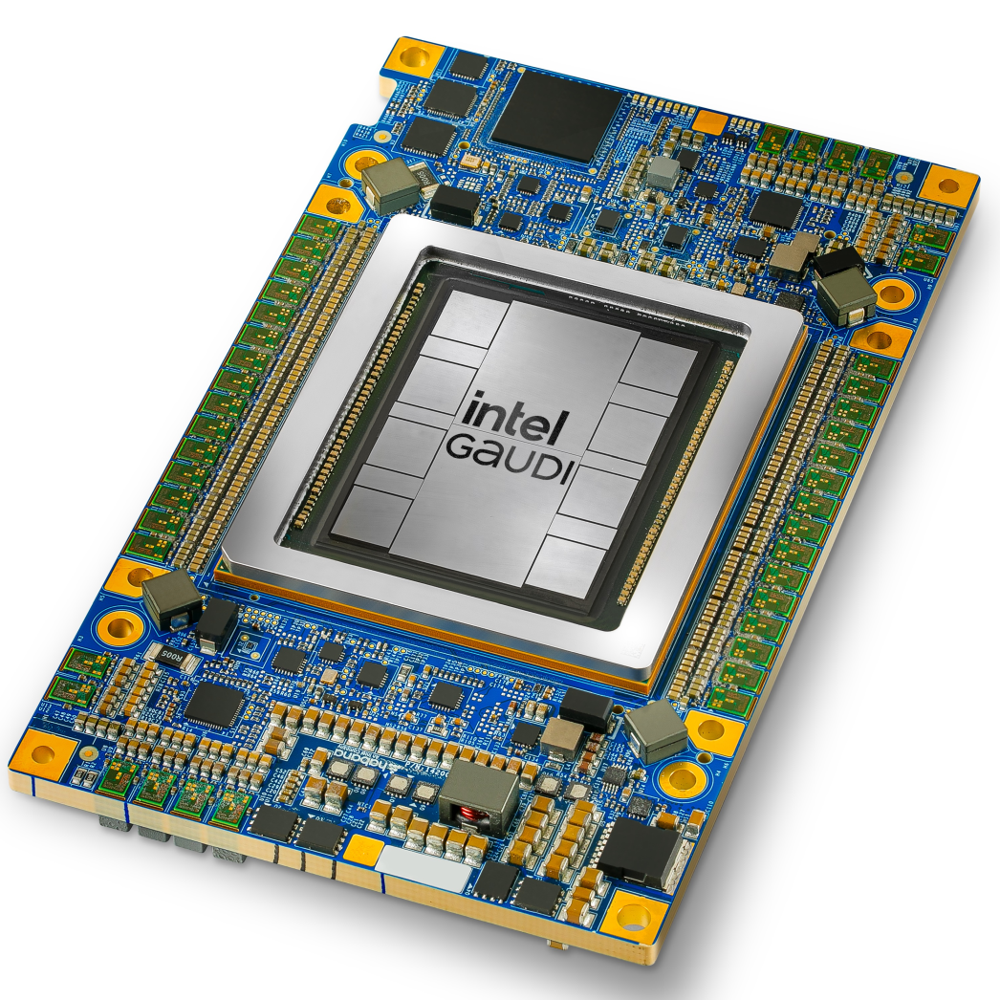

Milestones
A Legacy Measured in Transistors
Robert Noyce and Gordon Moore founded Intel in Mountain View, CA, with a mission to make semiconductor memory practical and affordable.

1968
Intel Founded
The Intel 4004 — the world's first commercially available microprocessor — packed 2,300 transistors onto a single chip, sparking the computing revolution.

1971
First Microprocessor
The 8080 became the CPU of the Altair 8800 — the machine that inspired a young Bill Gates and Paul Allen to found Microsoft. It put personal computing on the map.

1974
8080 Microprocessor
The i386 introduced 32-bit processing to the mainstream PC, enabling multitasking operating systems like Windows and OS/2 to flourish.

1986
i386 Processor
The Pentium brand became synonymous with PC performance in the 1990s, introducing superscalar architecture and 64-bit data paths for everyday consumers.

1993
Pentium Processors
Xeon brought workstation-class power to the data center, underpinning the server infrastructure that would later host the internet era.

1998
Xeon Processors
The Core microarchitecture redefined performance-per-watt, marking Intel's decisive shift toward energy-efficient computing — a cornerstone of sustainability.

2006
Core Microarchitecture
Gaudi 3 brings high-efficiency AI training and inference to the data center, purpose-built to maximize AI workload performance with a lower environmental footprint.

2023
Gaudi 3 AI Chip